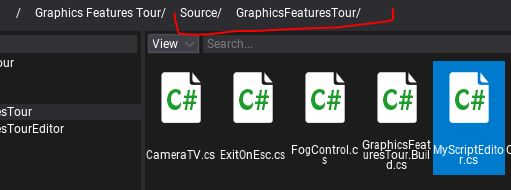

HOWTO: Create a custom editor plugin
Editor plugins can extend the Flax Editor or implement a proper tooling for the related game plugins that they are shipping with.
Note
Note: if your plugin uses both Game Plugin and Editor Plugin types the remember to implement EditorPlugin.GamePluginType to point the type of the game plugin.
1. Create editor script
Create a new C# script named MyEditorPlugin inside the Source/<module_name> directory and use the target class name with Editor postfix. Alternatively, you can use an additional editor-only scripts module as shown in tutorial here.

2. Implement plugin logic
Next step is to implement the actual logic of the plugin. Editor plugins can access whole C# API including Editor API. Use it to extend the default editor functionalities or create new ones.
Here is a sample code that adds a new button to the editor toolstrip and shows the message when a user clicks on it. Remember to clean up created GUI elements on editor plugin deinitialization!
#if FLAX_EDITOR
using FlaxEditor;
using FlaxEditor.GUI;
using FlaxEngine;
namespace ExamplePlugin
{
public class MyEditorPlugin : EditorPlugin
{
private ToolStripButton _button;
/// <inheritdoc />
public override void InitializeEditor()
{
base.InitializeEditor();
_button = Editor.UI.ToolStrip.AddButton("My Plugin");
_button.Clicked += () => MessageBox.Show("Button clicked!");
}
/// <inheritdoc />
public override void Deinitialize()
{
if (_button != null)
{
_button.Dispose();
_button = null;
}
base.Deinitialize();
}
}
}
#endif
Flax plugins use two main methods for the lifetime: Initialize and Deinitialize. However for Editor plugins when Initialize is called the Editor may still be uninitialized so it's better to use InitializeEditor to add custom GUI to the Editor.
3. Test it out
Go back to the Editor, wait for scripts recompilation and see the custom button is added. Click it to see the popup we have implemented. Now you are ready to implement more cool features to the editor.